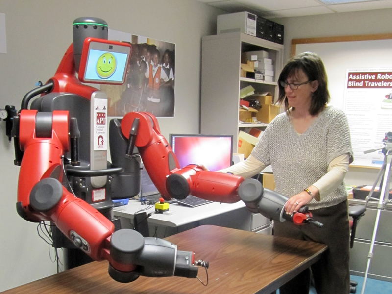

Assistive Robots for Blind Travelers
Smart cities should be truly accessible and navigable for everyone, including people with disabilities. Although traveling safely and independently is a critical requirement for modern life, visually impaired people often find navigating unfamiliar urban environments challenging and sometimes daunting. The World Health Organization estimates that 285 million people in the world are visually impaired, of whom 39 million are blind. Through our Assistive Robots for Blind Travelers project, funded by the National Science Foundation, we are exploring robotics and computing technology solutions that can assist the visually impaired population with urban navigation in smart cities of the future. Pictured: Orientation & Mobility instructor interacts with Baxter research robot.
Our work explores three research areas in the context of assistive robots for blind travelers:
- Accessible Interfaces, which will be a crucial component of assistive robots
- Assistive Interaction between humans and robots, which we envision happening both directly and remotely via accessible smartphone interfaces
- Effective Cooperation, which will have to accommodate a variety of teaming options including human-robot teams, maintain flexibility in teaming based on capabilities and resources, and also allow a range of connectedness and heterogeneity for the cooperating agents